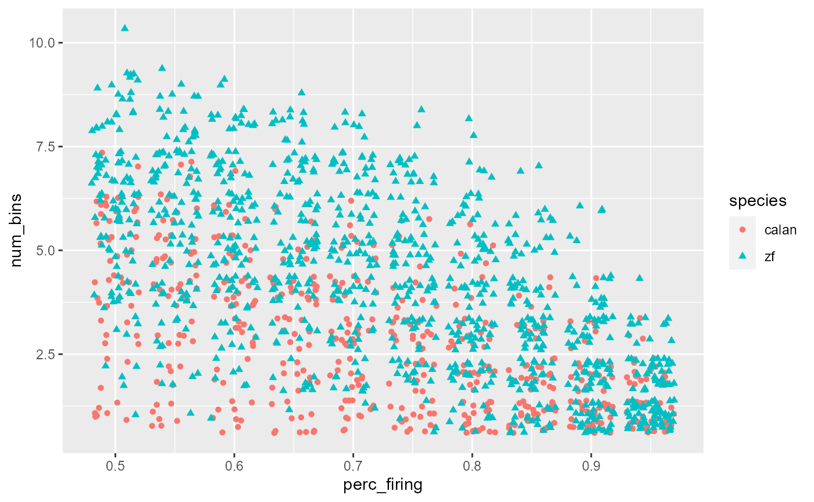
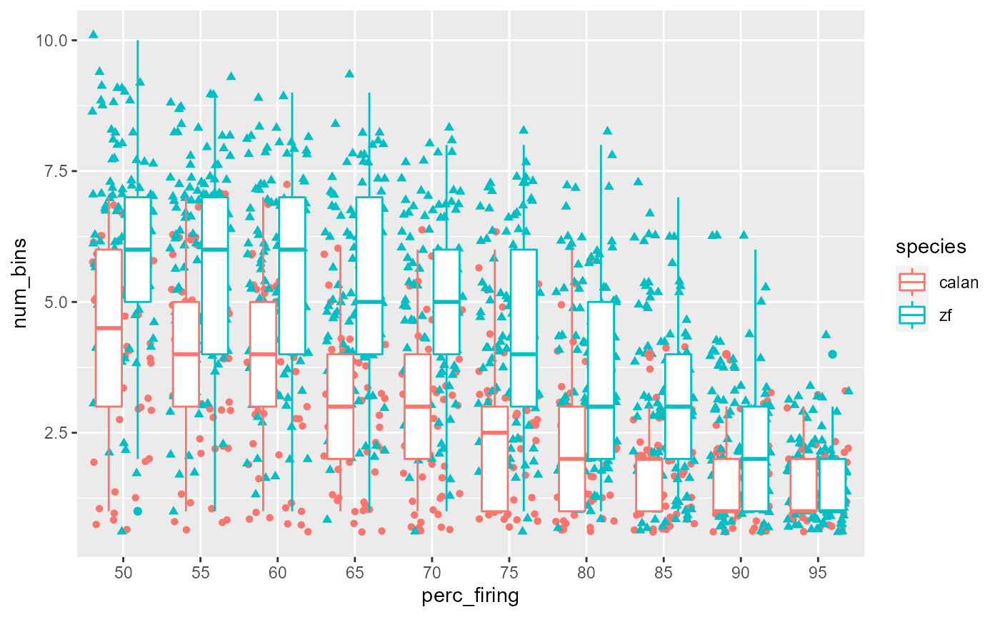
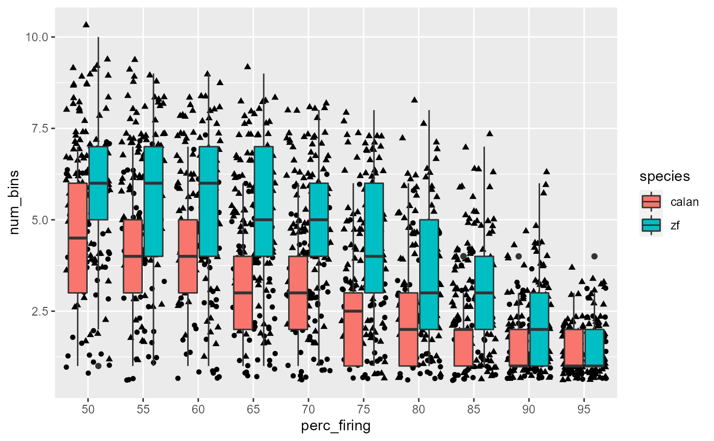
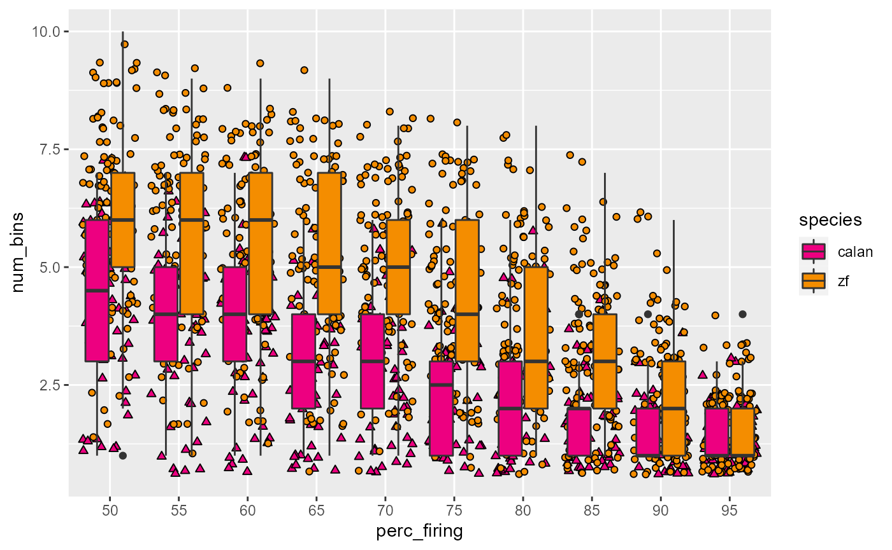
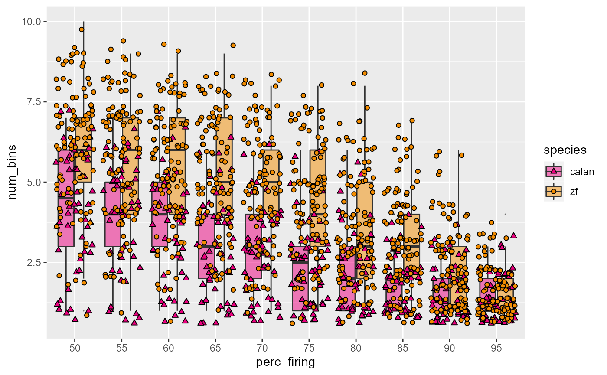
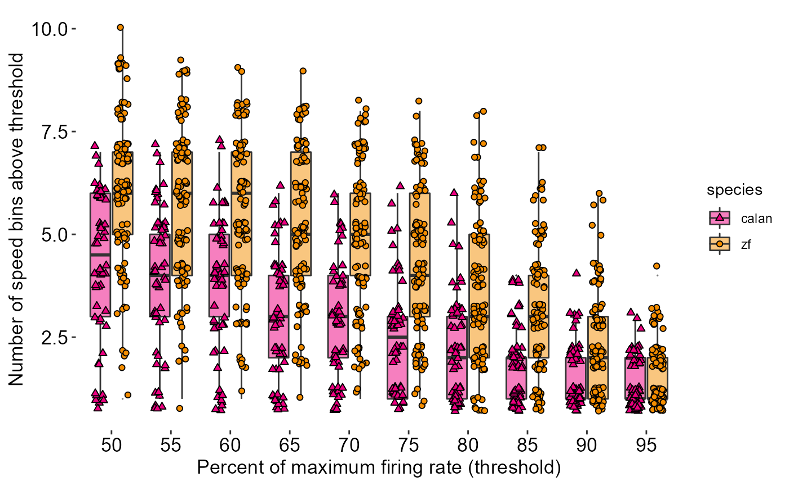
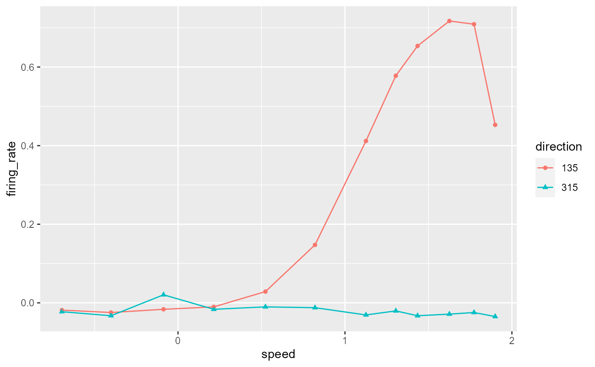
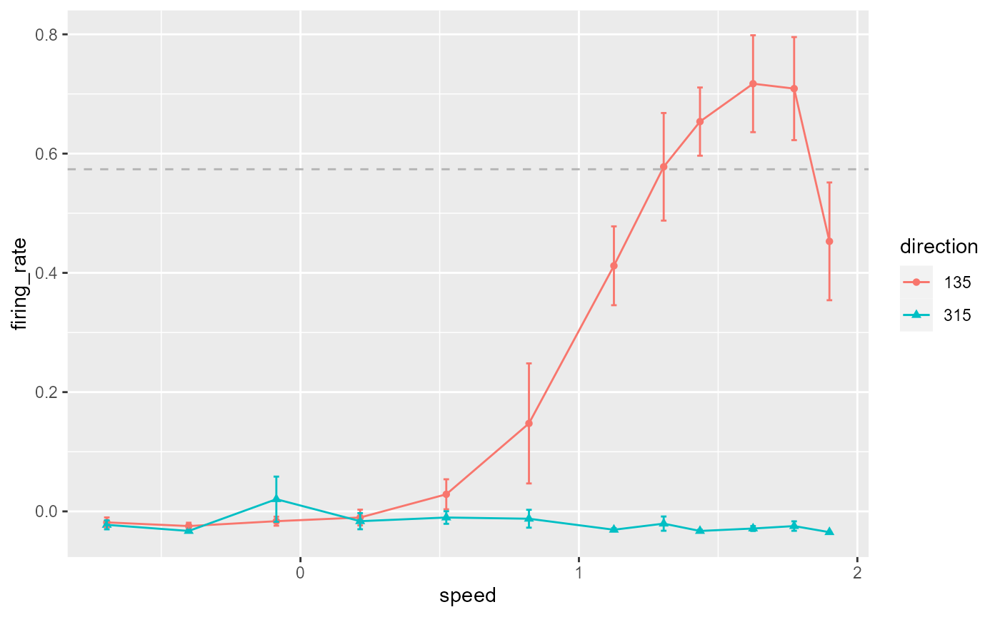
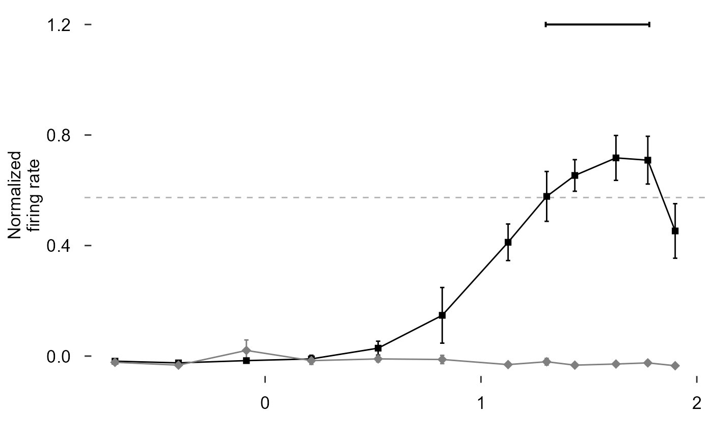

Part 2: Piping and producing single-panel ggplot figures
by Vikram B. Baliga, Andrea Gaede and Shreeram Senthivasan
Last updated on 2020-09-22 22:14:26
Source:vignettes/group-02_Piping-single-panel-ggplot-figs.Rmd
group-02_Piping-single-panel-ggplot-figs.RmdIntroduction
This vignette is Part 2 of 3 for an R workshop created for BIOL 548L, a graduate-level course taught at the University of British Columbia.
When the workshop runs, we split students into three groups with successively increasing levels of difficulty. To make sense of what follows, we recommend working through (or at least looking at) Part 1’s vignette.
The goal of Part 2’s vignette is to learn how to structure data to produce single plots ready for presentations and publications
Part 3’s vignette (which we recommend going through only after completing this page) can be found here.
All code and contents of this vignette were written together by Vikram B. Baliga, Andrea Gaede and Shreeram Senthivasan.
Learning Objectives:
- Articulate the advantages of literate programming
- Employ piping to restructure data for tidyverse
- Describe the grammar of graphics that underlies plotting in ggplot
- Manipulate plots to improve clarity and maximize the data : ink ratio
Load or install&load packages
We’ll first load packages that will be necessary. The package.check() function below is designed to first see if each package is already installed. If any aren’t, the function then installs them from CRAN. Then all the packages are loaded.
The code block is modified from this blog post
## Modified from: ## https://vbaliga.github.io/verify-that-r-packages-are-installed-and-loaded/ ## First specify the packages of interest packages <- c("gapminder", "ggplot2", "tidyr", "dplyr", "tibble", "readr", "forcats", "readxl", "ggthemes", "magick", "grid", "cowplot", # ggmap and maps are optional; needed for creating maps "ggmap", "maps") ## Now load or install&load all packages package.check <- lapply( packages, FUN = function(x) { if (!require(x, character.only = TRUE)) { install.packages(x, dependencies = TRUE, repos = "http://cran.us.r-project.org") library(x, character.only = TRUE) } } )
Data sets
You can get all data used in this vignette (and the other two!) by downloading this zip file.
What is literate programming?
“Literate programming” rethinks the “grammar” of traditional code to more closely resemble writing in a human language, like English.
The primary goal of literate programming is to move away from coding “for computers” (ie, code that simplifies compilation) and instead to write in a way that more resembles how we think.
In addition to making for much more readable code even with fewer comments, a good literate coding language should make it easier for you to translate ideas into code.
In the tidyverse, we will largely use the analogy of variables as nouns and functions as verbs that operate on the nouns.
The main way we will make our code literate however is with the pipe: %>%
What is a pipe?
A pipe, or %>%, is an operator that takes everything on the left and plugs it into the function on the right.
In short: x %>% f(y) is equivalent to f(x, y)
# So: filter(gapminder, continent == 'Asia') #> # A tibble: 396 x 6 #> country continent year lifeExp pop gdpPercap #> <fct> <fct> <int> <dbl> <int> <dbl> #> 1 Afghanistan Asia 1952 28.8 8425333 779. #> 2 Afghanistan Asia 1957 30.3 9240934 821. #> 3 Afghanistan Asia 1962 32.0 10267083 853. #> 4 Afghanistan Asia 1967 34.0 11537966 836. #> 5 Afghanistan Asia 1972 36.1 13079460 740. #> 6 Afghanistan Asia 1977 38.4 14880372 786. #> 7 Afghanistan Asia 1982 39.9 12881816 978. #> 8 Afghanistan Asia 1987 40.8 13867957 852. #> 9 Afghanistan Asia 1992 41.7 16317921 649. #> 10 Afghanistan Asia 1997 41.8 22227415 635. #> # … with 386 more rows # Can be re-written as: gapminder %>% filter(continent == 'Asia') #> # A tibble: 396 x 6 #> country continent year lifeExp pop gdpPercap #> <fct> <fct> <int> <dbl> <int> <dbl> #> 1 Afghanistan Asia 1952 28.8 8425333 779. #> 2 Afghanistan Asia 1957 30.3 9240934 821. #> 3 Afghanistan Asia 1962 32.0 10267083 853. #> 4 Afghanistan Asia 1967 34.0 11537966 836. #> 5 Afghanistan Asia 1972 36.1 13079460 740. #> 6 Afghanistan Asia 1977 38.4 14880372 786. #> 7 Afghanistan Asia 1982 39.9 12881816 978. #> 8 Afghanistan Asia 1987 40.8 13867957 852. #> 9 Afghanistan Asia 1992 41.7 16317921 649. #> 10 Afghanistan Asia 1997 41.8 22227415 635. #> # … with 386 more rows
In RStudio you can use the shortcut CTRL + SHIFT + M (on Windows) or CMD + SHIFT + M (on Mac) to insert a pipe
Why bother with pipes?
To see how pipes can make code more readable, let’s translate this cake recipe into pseudo R code:
- Cream together sugar and butter
- Beat in eggs and vanilla
- Mix in flour and baking powder
- Stir in milk
- Bake
- Frost
Saving Intermediate Steps:
One way you might approach coding this is by defining a lot of variables:
batter_1 <- cream(sugar, butter) batter_2 <- beat_in(batter_1, eggs, vanilla) batter_3 <- mix_in(batter_2, flour, baking_powder) batter_4 <- stir_in(batter_3, milk) cake <- bake(batter_3) cake_final <- frost(cake)
The info is all there, but there’s a lot of repetition and opportunity for typos. You also have to jump back and forth between lines to make sure you’re calling the right variables.
A similar approach would be to keep overwriting a single variable:
cake <- cream(sugar, butter) cake <- beat_in(cake, eggs, vanilla) cake <- mix_in(cake, flour, baking_powder) cake <- stir_in(cake, milk) cake <- bake(cake) cake <- frost(cake)
But it’s still not as clear as the original recipe…And if anything goes wrong you have to re-run the whole pipeline.
Function Composition:
If we don’t want to save intermediates, we can just do all the steps in one line:
frost(bake(stir_in(mix_in(beat_in(cream(sugar, butter), eggs, vanilla), flour, baking_powder), milk)))
Or with better indentation:
frost( bake( stir_in( mix_in( beat_in( cream(sugar, butter), eggs, vanilla ), flour, baking_powder ), milk) ) )
It’s pretty clear why this is no good
Piping
Now for the piping approach:
cake <- cream(sugar, butter) %>% beat_in(eggs, vanilla) %>% mix_in(flour, baking_powder) %>% stir_in(milk) %>% bake() %>% frost()
When you are reading code, you can replace pipes with the phrase “and then.”
And remember, pipes just take everything on the left and plug it into the function on the right. If you step through this code, this chunk is exactly the same as the function composition example above, it’s just written for people to read.
When you chain together multiple manipulations, piping makes it easy to focus on what’s important at every step. One caveat is that you need the first argument of every function in the pipe to be the object you are manipulating. Tidyverse functions all follow this convention, as do many other functions.
Where do you find new verbs?
The RStudio cheat sheets are a whole lot more useful once you start piping – here are a few:
Some prep work for the coding part of the lesson:
In this section our main goal will be to reproduce as closely as possible all the individual plots that make up Figure 3 in the Gaede et al. 2017 paper.
The one exception to that will be the legends and icons, which are easier to align and arrange when organizing the plots into a single multipanel figure, which is left for Group 3.
Let’s start by opening up the paper and setting up some variables we will be using throughout the plotting.
Colours for the different birds
col_hb <- "#ED0080" col_zb <- "#F48D00" col_pg <- "#4AA4F2"
Anatomy of a ggplot
ggplot2 is built around the idea of a “Grammar of Graphics” – a way of describing (almost) any graphic.
There are three key components to any graphic under the Grammar of Graphics:
- Data: the information to be conveyed
- Geometries: the things you actually draw on the plot (lines, points, polygons, etc…)
- Aesthetic mapping: the connection between relevant parts of the data and the aesthetics (size, colour, position, etc…) of the geometries
Any ggplot you make will at the very minimum require these three things and will usually look something like this:
ggplot(data = my_data, mapping = aes(x = var1, y = var2)) + geom_point()
Or, equivalently:
my_data %>% ggplot(aes(x = var1, y = var2)) + geom_point()
But how do you know what geometries are available or what aesthetic mappings you can use for each? Use the plotting with ggplot2 cheat sheet
Other possibly relevant componenets include:
- Coordinate systems (eg cartesian vs polar plots)
- Scales (eg mapping specifc colours to groups)
- Facets (subpanels of similar plots)
Build a boxplot with data superimposed (Figure 3 Panel D):
data_D <- read_csv("Fig3D_data.csv") #> Parsed with column specification: #> cols( #> species = col_character(), #> perc_firing = col_double(), #> num_bins = col_double() #> ) # Visualize data data_D #> # A tibble: 2,400 x 3 #> species perc_firing num_bins #> <chr> <dbl> <dbl> #> 1 calan 0.5 4 #> 2 calan 0.55 4 #> 3 calan 0.6 4 #> 4 calan 0.65 4 #> 5 calan 0.7 3 #> 6 calan 0.75 3 #> 7 calan 0.8 1 #> 8 calan 0.85 1 #> 9 calan 0.9 1 #> 10 calan 0.95 1 #> # … with 2,390 more rows
Let’s make a ggplot!
data_D %>% ggplot(mapping = aes(x = perc_firing, y = num_bins, colour = species))

Add points:
data_D %>% ggplot(mapping = aes(x = perc_firing, y = num_bins, colour = species)) + geom_point(mapping = aes(shape = species))
Separate points:
data_D %>% ggplot(aes(x = perc_firing, y = num_bins, colour = species)) + geom_point(aes(shape = species), position = 'jitter')

Add summary statistics:
data_D %>% ggplot(aes(x = perc_firing, y = num_bins, colour = species)) + geom_point(aes(shape = species), position = 'jitter') + geom_boxplot()

Fix x axis:
data_D <- read_csv("Fig3D_data.csv") %>% mutate( perc_firing = perc_firing * 100, perc_firing = as_factor(perc_firing) ) #> Parsed with column specification: #> cols( #> species = col_character(), #> perc_firing = col_double(), #> num_bins = col_double() #> )
Re-plot with new x:
data_D %>% ggplot(aes(x = perc_firing, y = num_bins, colour = species)) + geom_point(aes(shape = species), position = 'jitter') + geom_boxplot()

Swap colour to fill:
data_D %>% ggplot(aes(x = perc_firing, y = num_bins, fill = species)) + geom_point(aes(shape = species), position = 'jitter') + geom_boxplot()

Fix colours:
# browseURL("http://www.sthda.com/english/wiki/ggplot2-point-shapes") data_D %>% ggplot(aes(x = perc_firing, y = num_bins, fill = species)) + geom_point(aes(shape = species), position = 'jitter') + geom_boxplot() + scale_fill_manual(values = c(col_hb, col_zb)) + scale_shape_manual(values = c(24, 21))

De-emphasize boxplots, remove outliers
data_D %>% ggplot(aes(x = perc_firing, y = num_bins, fill = species)) + geom_boxplot(alpha = 0.5, outlier.size = 0) + geom_point(aes(shape = species), position = 'jitter') + scale_fill_manual(values = c(col_hb, col_zb)) + scale_shape_manual(values = c(24, 21))

Tune jitter:
data_D %>% ggplot(aes(x = perc_firing, y = num_bins, fill = species)) + geom_boxplot(alpha = 0.5, outlier.size = 0) + geom_point( aes(shape = species), position = position_jitterdodge(jitter.height = 0.3, jitter.width = 0.2) ) + scale_fill_manual(values = c(col_hb, col_zb)) + scale_shape_manual(values = c(24, 21))

Titles and theming and save:
fig_D <- data_D %>% ggplot(aes(x = perc_firing, y = num_bins, fill = species)) + geom_boxplot(alpha = 0.5, outlier.size = 0) + geom_point( aes(shape = species), position = position_jitterdodge(jitter.height = 0.3, jitter.width = 0.2) ) + scale_fill_manual(values = c(col_hb, col_zb)) + scale_shape_manual(values = c(24, 21)) + labs( x = "Percent of maximum firing rate (threshold)", y = "Number of speed bins above threshold" ) + # theme_bw() # theme_light() # theme_dark() theme_classic() fig_D

Let’s create a theme:
theme_548 <- theme_classic() + theme( axis.title = element_text(size = 13), axis.text = element_text(size = 13, colour = "black"), axis.line = element_blank() )
Let’s see what it looks like
fig_D + theme_548

Let’s create a theme:
theme_548 <- theme_classic() + theme( # Text axis.title = element_text(size = 13), axis.text = element_text(size = 13, colour = "black"), axis.text.x = element_text(margin = margin(t = 10, unit = "pt")), axis.text.y = element_text(margin = margin(r = 10)), # Axis line axis.line = element_blank(), axis.ticks.length = unit(-5,"pt"), # Legend legend.position = 'none', # Background transparency # Background of panel panel.background = element_rect(fill = "transparent"), # Background behind actual data points plot.background = element_rect(fill = "transparent", color = NA) ) fig_D + theme_548

Draw in x and y axes:
data_D %>% ggplot(aes(x = perc_firing, y = num_bins, fill = species)) + geom_boxplot(alpha = 0.5, outlier.size = 0) + geom_point( aes(shape = species), position = position_jitterdodge(jitter.height = 0.3, jitter.width = 0.2) ) + scale_fill_manual(values = c(col_hb, col_zb)) + scale_shape_manual(values = c(24, 21)) + labs( x = "Percent of maximum firing rate (threshold)", y = "Number of speed bins above threshold" ) + theme_548 + ggthemes::geom_rangeframe()

Draw in x and y axes:
fig_D <- data_D %>% ggplot(aes(x = perc_firing, y = num_bins, fill = species)) + geom_boxplot(alpha = 0.5, outlier.size = 0) + geom_point( aes(shape = species), position = position_jitterdodge(jitter.height = 0.3, jitter.width = 0.2) ) + scale_fill_manual(values = c(col_hb, col_zb)) + scale_shape_manual(values = c(24, 21)) + labs( x = "Percent of maximum firing rate (threshold)", y = "Number of speed bins above threshold" ) + theme_548 + geom_rangeframe() + annotate(geom = "segment", x = 0, xend = 0, y = 2.5, yend = 10) fig_D

Build a grouped barplot (Figure 3 Panel E):
Visualize the data:
read_csv("./Fig3E_data.csv") #> Parsed with column specification: #> cols( #> `0.1` = col_double(), #> `0.24` = col_double(), #> `0.5` = col_double(), #> `1` = col_double(), #> `1.5` = col_double(), #> `2` = col_double(), #> `4` = col_double(), #> `8` = col_double(), #> `16` = col_double(), #> `24` = col_double(), #> `32` = col_double(), #> `48` = col_double(), #> `64` = col_double(), #> `80` = col_double(), #> `128` = col_double(), #> `256` = col_double() #> ) #> # A tibble: 3 x 16 #> `0.1` `0.24` `0.5` `1` `1.5` `2` `4` `8` `16` `24` `32` #> <dbl> <dbl> <dbl> <dbl> <dbl> <dbl> <dbl> <dbl> <dbl> <dbl> <dbl> #> 1 0 0.0357 0.0179 0 0 0.107 0.0357 0.0357 0.0536 0.0893 0.0714 #> 2 0 0 0 0.0187 0 0.00935 0.00935 0.0935 0.168 0.121 0.187 #> 3 0 0 0.0947 0.0526 0.0105 0.126 0.126 0.0842 0.147 0 0.147 #> # … with 5 more variables: `48` <dbl>, `64` <dbl>, `80` <dbl>, `128` <dbl>, #> # `256` <dbl>
Restructure data for plotting:
# Add the missing info read_csv("./Fig3E_data.csv") %>% mutate(species = c("hb", "zb", "pg")) #> Parsed with column specification: #> cols( #> `0.1` = col_double(), #> `0.24` = col_double(), #> `0.5` = col_double(), #> `1` = col_double(), #> `1.5` = col_double(), #> `2` = col_double(), #> `4` = col_double(), #> `8` = col_double(), #> `16` = col_double(), #> `24` = col_double(), #> `32` = col_double(), #> `48` = col_double(), #> `64` = col_double(), #> `80` = col_double(), #> `128` = col_double(), #> `256` = col_double() #> ) #> # A tibble: 3 x 17 #> `0.1` `0.24` `0.5` `1` `1.5` `2` `4` `8` `16` `24` `32` #> <dbl> <dbl> <dbl> <dbl> <dbl> <dbl> <dbl> <dbl> <dbl> <dbl> <dbl> #> 1 0 0.0357 0.0179 0 0 0.107 0.0357 0.0357 0.0536 0.0893 0.0714 #> 2 0 0 0 0.0187 0 0.00935 0.00935 0.0935 0.168 0.121 0.187 #> 3 0 0 0.0947 0.0526 0.0105 0.126 0.126 0.0842 0.147 0 0.147 #> # … with 6 more variables: `48` <dbl>, `64` <dbl>, `80` <dbl>, `128` <dbl>, #> # `256` <dbl>, species <chr> # Pull the y-values down from the header data_E <- read_csv("./Fig3E_data.csv") %>% mutate(species = c("hb", "zb", "pg")) %>% gather(key = speed, value = prop, -species) #> Parsed with column specification: #> cols( #> `0.1` = col_double(), #> `0.24` = col_double(), #> `0.5` = col_double(), #> `1` = col_double(), #> `1.5` = col_double(), #> `2` = col_double(), #> `4` = col_double(), #> `8` = col_double(), #> `16` = col_double(), #> `24` = col_double(), #> `32` = col_double(), #> `48` = col_double(), #> `64` = col_double(), #> `80` = col_double(), #> `128` = col_double(), #> `256` = col_double() #> ) data_E #> # A tibble: 48 x 3 #> species speed prop #> <chr> <chr> <dbl> #> 1 hb 0.1 0 #> 2 zb 0.1 0 #> 3 pg 0.1 0 #> 4 hb 0.24 0.0357 #> 5 zb 0.24 0 #> 6 pg 0.24 0 #> 7 hb 0.5 0.0179 #> 8 zb 0.5 0 #> 9 pg 0.5 0.0947 #> 10 hb 1 0 #> # … with 38 more rows
Plot data:
data_E %>% ggplot(aes(x = speed, y = prop, fill = species)) + geom_col()

# But wait, the x-axis and species are out of order! data_E #> # A tibble: 48 x 3 #> species speed prop #> <chr> <chr> <dbl> #> 1 hb 0.1 0 #> 2 zb 0.1 0 #> 3 pg 0.1 0 #> 4 hb 0.24 0.0357 #> 5 zb 0.24 0 #> 6 pg 0.24 0 #> 7 hb 0.5 0.0179 #> 8 zb 0.5 0 #> 9 pg 0.5 0.0947 #> 10 hb 1 0 #> # … with 38 more rows data_E <- data_E %>% mutate( species = fct_relevel(species, c("hb","zb","pg")), speed = as_factor(as.numeric(speed)) ) data_E #> # A tibble: 48 x 3 #> species speed prop #> <fct> <fct> <dbl> #> 1 hb 0.1 0 #> 2 zb 0.1 0 #> 3 pg 0.1 0 #> 4 hb 0.24 0.0357 #> 5 zb 0.24 0 #> 6 pg 0.24 0 #> 7 hb 0.5 0.0179 #> 8 zb 0.5 0 #> 9 pg 0.5 0.0947 #> 10 hb 1 0 #> # … with 38 more rows
Plot data again!
data_E %>% ggplot(aes(x = speed, y = prop, fill = species)) + geom_col()

# Unstack columns and add black outline data_E %>% ggplot(aes(x = speed, y = prop, fill = species)) + geom_col(position = 'dodge', colour = "black")

# Space out column groups, thin out the columns, thin the outline data_E %>% ggplot(aes(x = speed, y = prop, fill = species)) + geom_col( position = position_dodge(0.75), width = 0.75, size = 0.2, colour = "black" )

Pick colours, add labels, add theme:
data_E %>% ggplot(aes(x = speed, y = prop, fill = species)) + geom_col( position = position_dodge(0.75), width = 0.75, size = 0.2, colour = "black" ) + scale_fill_manual(values = c(col_hb, col_zb, col_pg)) + labs( x = "Speed bins (degrees/s)", y = "Proportion of LM\ncell population" )+ theme_548

Fix x axis, add y axis line:
fig_E <- data_E %>% ggplot(aes(x = speed, y = prop, fill = species)) + # Plot data geom_col( position = position_dodge(0.75), width = 0.75, size = 0.2, colour = "black" ) + # Pick colours scale_fill_manual(values = c(col_hb, col_zb, col_pg)) + # Text labs( x = "Speed bins (degrees/s)", y = "Proportion of LM\ncell population" )+ # Theme theme_548 + # Axes theme( axis.ticks.x = element_blank(), axis.text.x = element_text(margin = margin(t = 0)) ) + geom_rangeframe(sides = 'l') fig_E
Build a line plot with error bars and other graphical features (Figure 3 Panel B):
Visualize data:
read_csv("Fig3B_data.csv") #> Parsed with column specification: #> cols( #> .default = col_double() #> ) #> See spec(...) for full column specifications. #> # A tibble: 239 x 23 #> trial direction speed bin1 bin2 bin3 bin4 bin5 bin6 bin7 bin8 #> <dbl> <dbl> <dbl> <dbl> <dbl> <dbl> <dbl> <dbl> <dbl> <dbl> <dbl> #> 1 1 135 1.90 12.0 4.00 4.00 0 4.00 0 0 0 #> 2 2 NaN NaN 0 4.00 0 4.00 0 0 0 0 #> 3 3 315 -0.696 0 4.00 0 0 0 0 4.00 0 #> 4 4 NaN NaN 0 0 0 0 0 4.00 0 0 #> 5 5 135 -0.0867 0 0 0 4.00 0 0 0 0 #> 6 6 NaN NaN 0 0 0 0 0 0 0 0 #> 7 7 135 0.821 16 24 16 28 36 8.00 8.00 8.00 #> 8 8 NaN NaN 4.00 0 0 0 0 0 0 0 #> 9 9 315 1.63 0 0 0 0 0 0 0 0 #> 10 10 NaN NaN 0 4.00 12 0 4.00 0 0 4.00 #> # … with 229 more rows, and 12 more variables: bin9 <dbl>, bin10 <dbl>, #> # bin11 <dbl>, bin12 <dbl>, bin13 <dbl>, bin14 <dbl>, bin15 <dbl>, #> # bin16 <dbl>, bin17 <dbl>, bin18 <dbl>, bin19 <dbl>, bin20 <dbl>
Gather all the bin data into one column:
read_csv("Fig3B_data.csv") %>% gather(key = bin, value = count, starts_with("bin")) #> Parsed with column specification: #> cols( #> .default = col_double() #> ) #> See spec(...) for full column specifications. #> # A tibble: 4,780 x 5 #> trial direction speed bin count #> <dbl> <dbl> <dbl> <chr> <dbl> #> 1 1 135 1.90 bin1 12.0 #> 2 2 NaN NaN bin1 0 #> 3 3 315 -0.696 bin1 0 #> 4 4 NaN NaN bin1 0 #> 5 5 135 -0.0867 bin1 0 #> 6 6 NaN NaN bin1 0 #> 7 7 135 0.821 bin1 16 #> 8 8 NaN NaN bin1 4.00 #> 9 9 315 1.63 bin1 0 #> 10 10 NaN NaN bin1 0 #> # … with 4,770 more rows
Group the data by trial, direction speed:
read_csv("Fig3B_data.csv") %>% gather(key = bin, value = count, starts_with("bin")) %>% group_by(trial, direction, speed) #> Parsed with column specification: #> cols( #> .default = col_double() #> ) #> See spec(...) for full column specifications. #> # A tibble: 4,780 x 5 #> # Groups: trial, direction, speed [239] #> trial direction speed bin count #> <dbl> <dbl> <dbl> <chr> <dbl> #> 1 1 135 1.90 bin1 12.0 #> 2 2 NaN NaN bin1 0 #> 3 3 315 -0.696 bin1 0 #> 4 4 NaN NaN bin1 0 #> 5 5 135 -0.0867 bin1 0 #> 6 6 NaN NaN bin1 0 #> 7 7 135 0.821 bin1 16 #> 8 8 NaN NaN bin1 4.00 #> 9 9 315 1.63 bin1 0 #> 10 10 NaN NaN bin1 0 #> # … with 4,770 more rows
Calculate firing rate for each trial:
read_csv("Fig3B_data.csv") %>% gather(key = bin, value = count, starts_with("bin")) %>% group_by(trial, direction, speed) %>% summarize( raw_firing_rate = mean(count) ) #> Parsed with column specification: #> cols( #> .default = col_double() #> ) #> See spec(...) for full column specifications. #> `summarise()` regrouping output by 'trial', 'direction' (override with `.groups` argument) #> # A tibble: 239 x 4 #> # Groups: trial, direction [239] #> trial direction speed raw_firing_rate #> <dbl> <dbl> <dbl> <dbl> #> 1 1 135 1.90 2.00 #> 2 2 NaN NaN 0.400 #> 3 3 315 -0.696 0.800 #> 4 4 NaN NaN 0.400 #> 5 5 135 -0.0867 0.600 #> 6 6 NaN NaN 0 #> 7 7 135 0.821 11.4 #> 8 8 NaN NaN 0.200 #> 9 9 315 1.63 0 #> 10 10 NaN NaN 1.20 #> # … with 229 more rows
Finally let’s ungroup and store this unnormalized data:
data_B_raw <- read_csv("Fig3B_data.csv") %>% gather(key = bin, value = count, starts_with("bin")) %>% group_by(trial, direction, speed) %>% summarize( raw_firing_rate = mean(count) ) %>% ungroup() #> Parsed with column specification: #> cols( #> .default = col_double() #> ) #> See spec(...) for full column specifications. #> `summarise()` regrouping output by 'trial', 'direction' (override with `.groups` argument) data_B_raw #> # A tibble: 239 x 4 #> trial direction speed raw_firing_rate #> <dbl> <dbl> <dbl> <dbl> #> 1 1 135 1.90 2.00 #> 2 2 NaN NaN 0.400 #> 3 3 315 -0.696 0.800 #> 4 4 NaN NaN 0.400 #> 5 5 135 -0.0867 0.600 #> 6 6 NaN NaN 0 #> 7 7 135 0.821 11.4 #> 8 8 NaN NaN 0.200 #> 9 9 315 1.63 0 #> 10 10 NaN NaN 1.20 #> # … with 229 more rows
Now we need to normalize the data:
# First calculate a baseline tail(data_B_raw) #> # A tibble: 6 x 4 #> trial direction speed raw_firing_rate #> <dbl> <dbl> <dbl> <dbl> #> 1 234 NaN NaN 0.400 #> 2 235 315 -0.0867 4.00 #> 3 236 NaN NaN 0 #> 4 237 135 -0.696 0.600 #> 5 238 NaN NaN 0.600 #> 6 239 315 0.821 0.200 data_B_raw %>% filter(direction == 'NaN') #> # A tibble: 119 x 4 #> trial direction speed raw_firing_rate #> <dbl> <dbl> <dbl> <dbl> #> 1 2 NaN NaN 0.400 #> 2 4 NaN NaN 0.400 #> 3 6 NaN NaN 0 #> 4 8 NaN NaN 0.200 #> 5 10 NaN NaN 1.20 #> 6 12 NaN NaN 0.600 #> 7 14 NaN NaN 0.800 #> 8 16 NaN NaN 0.6 #> 9 18 NaN NaN 0.200 #> 10 20 NaN NaN 0.400 #> # … with 109 more rows data_B_raw %>% filter(direction == 'NaN') %>% pull(raw_firing_rate) #> [1] 0.400010 0.400010 0.000000 0.200005 1.200015 0.600015 0.800020 #> [8] 0.600000 0.200005 0.400010 0.200005 1.000020 4.600060 1.800045 #> [15] 2.200045 0.000000 11.000040 1.200030 1.400035 0.400010 1.600010 #> [22] 0.600030 0.000000 0.000000 0.000000 0.200005 0.000000 0.000000 #> [29] 0.200005 0.400010 0.200005 0.000000 0.200005 0.200005 0.600015 #> [36] 0.000000 0.000000 1.600035 3.600060 0.200005 0.200000 0.200005 #> [43] 0.800020 0.000000 0.400010 0.200005 0.800020 0.800020 0.800020 #> [50] 0.200005 0.200000 0.600015 0.200005 0.600015 0.600015 0.000000 #> [57] 0.200005 0.000000 0.200005 0.000000 0.000000 0.000000 0.000000 #> [64] 0.000000 0.200005 0.400005 1.400020 0.000000 0.000000 0.000000 #> [71] 0.000000 12.800070 0.000000 0.000000 0.000000 0.000000 1.600070 #> [78] 0.400010 4.200115 1.200015 0.000000 0.000000 0.000000 0.200005 #> [85] 0.000000 0.400010 0.400010 0.400010 0.200005 1.400035 0.400010 #> [92] 0.200005 0.000000 0.000000 0.000000 0.000000 0.000000 0.000000 #> [99] 4.600050 0.200005 0.000000 0.400010 1.800045 0.600015 0.200005 #> [106] 0.000000 0.200005 0.200005 0.000000 0.000000 0.200005 0.000000 #> [113] 0.000000 0.200005 0.000000 0.400005 0.400010 0.000000 0.600015 baseline <- data_B_raw %>% filter(direction == 'NaN') %>% pull(raw_firing_rate) %>% mean baseline #> [1] 0.6806833 # Use the baseline to normalize the data data_B_raw %>% filter(direction != 'NaN') %>% mutate( norm_firing_rate = raw_firing_rate - baseline, norm_firing_rate = norm_firing_rate / max(abs(norm_firing_rate)) ) #> # A tibble: 120 x 5 #> trial direction speed raw_firing_rate norm_firing_rate #> <dbl> <dbl> <dbl> <dbl> <dbl> #> 1 1 135 1.90 2.00 0.0676 #> 2 3 315 -0.696 0.800 0.00611 #> 3 5 135 -0.0867 0.600 -0.00413 #> 4 7 135 0.821 11.4 0.549 #> 5 9 315 1.63 0 -0.0349 #> 6 11 135 -0.401 0.200 -0.0246 #> 7 13 315 1.90 0 -0.0349 #> 8 15 135 1.63 20.2 1 #> 9 17 315 -0.0867 0.200 -0.0246 #> 10 19 135 1.13 13.2 0.641 #> # … with 110 more rows
Next let’s find the mean and SE of firing rate across like trials:
data_B_raw %>% filter(direction != 'NaN') %>% mutate( norm_firing_rate = raw_firing_rate - baseline, norm_firing_rate = norm_firing_rate / max(abs(norm_firing_rate)) ) %>% group_by(direction, speed) %>% summarize( firing_rate = mean(norm_firing_rate), sem = sd(norm_firing_rate) / sqrt(n()) ) #> `summarise()` regrouping output by 'direction' (override with `.groups` argument) #> # A tibble: 24 x 4 #> # Groups: direction [2] #> direction speed firing_rate sem #> <dbl> <dbl> <dbl> <dbl> #> 1 135 -0.696 -0.0185 0.00832 #> 2 135 -0.401 -0.0246 0.00561 #> 3 135 -0.0867 -0.0164 0.00753 #> 4 135 0.214 -0.0103 0.0132 #> 5 135 0.524 0.0287 0.0252 #> 6 135 0.821 0.148 0.101 #> 7 135 1.13 0.412 0.0661 #> 8 135 1.30 0.578 0.0902 #> 9 135 1.43 0.654 0.0572 #> 10 135 1.63 0.717 0.0812 #> # … with 14 more rows
Finally ungroup the data and convert direction to a factor:
data_B <- data_B_raw %>% filter(direction != 'NaN') %>% mutate( norm_firing_rate = raw_firing_rate - baseline, norm_firing_rate = norm_firing_rate / max(abs(norm_firing_rate)) ) %>% group_by(direction, speed) %>% summarize( firing_rate = mean(norm_firing_rate), sem = sd(norm_firing_rate) / sqrt(n()) ) %>% ungroup() %>% mutate(direction = as_factor(direction)) #> `summarise()` regrouping output by 'direction' (override with `.groups` argument) data_B #> # A tibble: 24 x 4 #> direction speed firing_rate sem #> <fct> <dbl> <dbl> <dbl> #> 1 135 -0.696 -0.0185 0.00832 #> 2 135 -0.401 -0.0246 0.00561 #> 3 135 -0.0867 -0.0164 0.00753 #> 4 135 0.214 -0.0103 0.0132 #> 5 135 0.524 0.0287 0.0252 #> 6 135 0.821 0.148 0.101 #> 7 135 1.13 0.412 0.0661 #> 8 135 1.30 0.578 0.0902 #> 9 135 1.43 0.654 0.0572 #> 10 135 1.63 0.717 0.0812 #> # … with 14 more rows
Plot the data!
data_B %>% ggplot(aes(x = speed, y = firing_rate)) + geom_point(aes(colour = direction, shape = direction)) + geom_line(aes(colour = direction))

Add error bars and threshold line:
data_B %>% ggplot(aes(x = speed, y = firing_rate)) + geom_point(aes(colour = direction, shape = direction)) + geom_line(aes(colour = direction)) + geom_errorbar( aes( colour = direction, ymin = firing_rate - sem, ymax = firing_rate + sem ), width = 0.02 ) + geom_hline( yintercept = 0.8 * max(data_B$firing_rate), colour = 'grey70', linetype = 'dashed' )

Add a line segment indicating points over threshold:
data_B %>% ggplot(aes(x = speed, y = firing_rate)) + geom_point(aes(colour = direction, shape = direction)) + geom_line(aes(colour = direction)) + geom_errorbar( aes( colour = direction, ymin = firing_rate - sem, ymax = firing_rate + sem ), width = 0.02 ) + geom_hline( yintercept = 0.8 * max(data_B$firing_rate), colour = 'grey70', linetype = 'dashed' ) + annotate( geom = 'segment', x = 1.3, xend = 1.78, y = 1.2, yend = 1.2, size = 0.7, arrow = arrow(ends = 'both', length = unit(2, "pt"), angle = 90) )

Set colours, shapes, labels, and themes:
data_B %>% ggplot(aes(x = speed, y = firing_rate)) + geom_point(aes(colour = direction, shape = direction)) + geom_line(aes(colour = direction)) + geom_errorbar( aes( colour = direction, ymin = firing_rate - sem, ymax = firing_rate + sem ), width = 0.02 ) + geom_hline( yintercept = 0.8 * max(data_B$firing_rate), colour = 'grey70', linetype = 'dashed' ) + annotate( geom = 'segment', x = 1.3, xend = 1.78, y = 1.2, yend = 1.2, size = 0.7, arrow = arrow(ends = 'both', length = unit(2, "pt"), angle = 90) ) + scale_colour_manual(values = c("black", "grey50")) + scale_shape_manual(values = c(15, 18)) + labs(y = "Normalized\nfiring rate", x = "") + theme_548

Make the diamonds bigger, reorder layers to emphasize points, remove x axis title:
data_B %>% ggplot(aes(x = speed, y = firing_rate)) + geom_hline( yintercept = 0.8 * max(data_B$firing_rate), colour = 'grey70', linetype = 'dashed' ) + geom_line(aes(colour = direction)) + geom_errorbar( aes( colour = direction, ymin = firing_rate - sem, ymax = firing_rate + sem ), width = 0.02 ) + geom_point(aes(colour = direction, shape = direction, size = direction)) + annotate( geom = 'segment', x = 1.3, xend = 1.78, y = 1.2, yend = 1.2, size = 0.7, arrow = arrow(ends = 'both', length = unit(2, "pt"), angle = 90) ) + scale_colour_manual(values = c("black", "grey50")) + scale_shape_manual(values = c(15, 18)) + scale_size_manual(values = c(2, 3)) + labs(y = "Normalized\nfiring rate", x = "") + theme(axis.title.x = element_blank()) + theme_548

Add axis lines:
data_B %>% ggplot(aes(x = speed, y = firing_rate)) + geom_hline( yintercept = 0.8 * max(data_B$firing_rate), colour = 'grey70', linetype = 'dashed' ) + geom_line(aes(colour = direction)) + geom_errorbar( aes( colour = direction, ymin = firing_rate - sem, ymax = firing_rate + sem ), width = 0.02 ) + geom_point(aes(colour = direction, shape = direction, size = direction)) + annotate( geom = 'segment', x = 1.3, xend = 1.78, y = 1.2, yend = 1.2, size = 0.7, arrow = arrow(ends = 'both', length = unit(2, "pt"), angle = 90) ) + scale_colour_manual(values = c("black", "grey50")) + scale_shape_manual(values = c(15, 18)) + scale_size_manual(values = c(2, 3)) + labs(y = "Normalized\nfiring rate", x = "") + theme(axis.title.x = element_blank()) + theme_548 + geom_rangeframe()
Note the line lengths, y limits, and x breaks are all wrong
To fudge the lines, let’s make another dataset:
fudge_axis_BC <- tibble(speed = c(-0.5,2), firing_rate = c(-1,2)) fudge_axis_BC #> # A tibble: 2 x 2 #> speed firing_rate #> <dbl> <dbl> #> 1 -0.5 -1 #> 2 2 2 fig_B <- data_B %>% ggplot(aes(x = speed, y = firing_rate)) + # Plot data and threshold geom_hline( yintercept = 0.8 * max(data_B$firing_rate), colour = 'grey70', linetype = 'dashed' ) + geom_line(aes(colour = direction)) + geom_errorbar( aes( colour = direction, ymin = firing_rate - sem, ymax = firing_rate + sem ), width = 0.02 ) + geom_point(aes(colour = direction, shape = direction, size = direction)) + # Annotate points over threshold annotate( geom = 'segment', x = 1.3, xend = 1.78, y = 1.2, yend = 1.2, size = 0.7, arrow = arrow(ends = 'both', length = unit(2, "pt"), angle = 90) ) + # Select colours and shapes scale_colour_manual(values = c("black", "grey50")) + scale_shape_manual(values = c(15, 18)) + scale_size_manual(values = c(2, 3)) + # Text labs(y = "Normalized\nfiring rate", x = "") + # Theme theme_548 + # Axes geom_rangeframe(data = fudge_axis_BC) + lims(y = c(-1,2)) + scale_x_continuous(breaks = -1:4 / 2) fig_B

Build another grouped barplot (Figure 3 Panel F):
Visualize data:
read_csv("./Fig3F_data.csv") #> Parsed with column specification: #> cols( #> .default = col_double() #> ) #> See spec(...) for full column specifications. #> # A tibble: 240 x 33 #> bird trk site cell pd.sum species test.dir1 dir1.area test.dir2 #> <dbl> <dbl> <dbl> <dbl> <dbl> <dbl> <dbl> <dbl> <dbl> #> 1 194 1 3007 1 11.1 2 0 25.1 180 #> 2 194 1 3007 2 343. 2 0 41.4 180 #> 3 194 1 3062 1 298. 2 NA NA NA #> 4 194 1 3062 2 358. 2 0 46.9 180 #> 5 194 1 3062 3 287. 2 NA NA NA #> 6 194 3 3459 3 188. 2 NA NA NA #> 7 194 5 3516 1 117. 2 135 20.9 315 #> 8 194 5 3516 2 176. 2 135 20.2 315 #> 9 194 5 3516 3 192. 2 NA NA NA #> 10 194 5 3516 4 155. 2 NA NA NA #> # … with 230 more rows, and 24 more variables: dir2.area <dbl>, #> # pref.speed <dbl>, sp80.1 <dbl>, sp80.2 <dbl>, sp80.3 <dbl>, sp80.4 <dbl>, #> # sp80.5 <dbl>, sp80.6 <dbl>, sp80.7 <dbl>, sp80.8 <dbl>, sp80.9 <dbl>, #> # sp80.10 <dbl>, sp80.11 <dbl>, sp80.12 <dbl>, tune50 <dbl>, tune55 <dbl>, #> # tune60 <dbl>, tune65 <dbl>, tune70 <dbl>, tune75 <dbl>, tune80 <dbl>, #> # tune85 <dbl>, tune90 <dbl>, tune95 <dbl> speeds_F <- c(0.24,0.5,1,2,4,8,16,24,32,48,64,80)
Remove any rows without data (dir1.area is NA):
read_csv("./Fig3F_data.csv") %>% filter(!is.na(dir1.area)) #> Parsed with column specification: #> cols( #> .default = col_double() #> ) #> See spec(...) for full column specifications. #> # A tibble: 163 x 33 #> bird trk site cell pd.sum species test.dir1 dir1.area test.dir2 #> <dbl> <dbl> <dbl> <dbl> <dbl> <dbl> <dbl> <dbl> <dbl> #> 1 194 1 3007 1 11.1 2 0 25.1 180 #> 2 194 1 3007 2 343. 2 0 41.4 180 #> 3 194 1 3062 2 358. 2 0 46.9 180 #> 4 194 5 3516 1 117. 2 135 20.9 315 #> 5 194 5 3516 2 176. 2 135 20.2 315 #> 6 198 3 2990 1 320. 2 315 -12.9 135 #> 7 198 3 2990 2 340. 2 315 30.4 135 #> 8 198 5 3345 2 147. 2 135 -2.81 315 #> 9 198 5 3345 3 141. 2 135 -22.7 315 #> 10 199 1 2383 1 92.4 2 90 1.67 270 #> # … with 153 more rows, and 24 more variables: dir2.area <dbl>, #> # pref.speed <dbl>, sp80.1 <dbl>, sp80.2 <dbl>, sp80.3 <dbl>, sp80.4 <dbl>, #> # sp80.5 <dbl>, sp80.6 <dbl>, sp80.7 <dbl>, sp80.8 <dbl>, sp80.9 <dbl>, #> # sp80.10 <dbl>, sp80.11 <dbl>, sp80.12 <dbl>, tune50 <dbl>, tune55 <dbl>, #> # tune60 <dbl>, tune65 <dbl>, tune70 <dbl>, tune75 <dbl>, tune80 <dbl>, #> # tune85 <dbl>, tune90 <dbl>, tune95 <dbl>
Remove unnecessary columns:
read_csv("./Fig3F_data.csv") %>% filter(!is.na(dir1.area)) %>% select(starts_with("sp")) #> Parsed with column specification: #> cols( #> .default = col_double() #> ) #> See spec(...) for full column specifications. #> # A tibble: 163 x 13 #> species sp80.1 sp80.2 sp80.3 sp80.4 sp80.5 sp80.6 sp80.7 sp80.8 sp80.9 #> <dbl> <dbl> <dbl> <dbl> <dbl> <dbl> <dbl> <dbl> <dbl> <dbl> #> 1 2 0 0 0 0 0 0 0 0 0 #> 2 2 0 0 0 0 0 0 0 0 1 #> 3 2 0 0 0 0 0 0 0 0 1 #> 4 2 0 0 0 0 0 0 0 0 0 #> 5 2 0 0 0 0 1 0 0 0 0 #> 6 2 0 0 0 1 0 0 0 0 0 #> 7 2 0 0 0 0 0 0 0 0 0 #> 8 2 0 0 0 0 0 0 0 0 0 #> 9 2 1 0 0 0 0 0 0 0 0 #> 10 2 0 1 0 0 0 0 0 0 0 #> # … with 153 more rows, and 3 more variables: sp80.10 <dbl>, sp80.11 <dbl>, #> # sp80.12 <dbl>
Rename columns using speeds_F, change species to words:
read_csv("./Fig3F_data.csv") %>% filter(!is.na(dir1.area)) %>% select(starts_with("sp")) %>% rename_all(~c("species",as.character(speeds_F))) %>% mutate( species = case_when( species == 1 ~ "zb", species == 2 ~ "hb" ) ) #> Parsed with column specification: #> cols( #> .default = col_double() #> ) #> See spec(...) for full column specifications. #> # A tibble: 163 x 13 #> species `0.24` `0.5` `1` `2` `4` `8` `16` `24` `32` `48` `64` #> <chr> <dbl> <dbl> <dbl> <dbl> <dbl> <dbl> <dbl> <dbl> <dbl> <dbl> <dbl> #> 1 hb 0 0 0 0 0 0 0 0 0 1 0 #> 2 hb 0 0 0 0 0 0 0 0 1 1 1 #> 3 hb 0 0 0 0 0 0 0 0 1 0 1 #> 4 hb 0 0 0 0 0 0 0 0 0 1 1 #> 5 hb 0 0 0 0 1 0 0 0 0 1 0 #> 6 hb 0 0 0 1 0 0 0 0 0 0 0 #> 7 hb 0 0 0 0 0 0 0 0 0 0 1 #> 8 hb 0 0 0 0 0 0 0 0 0 0 1 #> 9 hb 1 0 0 0 0 0 0 0 0 0 0 #> 10 hb 0 1 0 0 0 0 0 0 0 0 0 #> # … with 153 more rows, and 1 more variable: `80` <dbl>
Reshape data for plotting:
read_csv("./Fig3F_data.csv") %>% filter(!is.na(dir1.area)) %>% select(starts_with("sp")) %>% rename_all(~c("species",as.character(speeds_F))) %>% mutate( species = case_when( species == 1 ~ "zb", species == 2 ~ "hb" ) ) %>% gather(key = speed, value = prop, -species) #> Parsed with column specification: #> cols( #> .default = col_double() #> ) #> See spec(...) for full column specifications. #> # A tibble: 1,956 x 3 #> species speed prop #> <chr> <chr> <dbl> #> 1 hb 0.24 0 #> 2 hb 0.24 0 #> 3 hb 0.24 0 #> 4 hb 0.24 0 #> 5 hb 0.24 0 #> 6 hb 0.24 0 #> 7 hb 0.24 0 #> 8 hb 0.24 0 #> 9 hb 0.24 1 #> 10 hb 0.24 0 #> # … with 1,946 more rows
Summarize proporions by species and speed:
read_csv("./Fig3F_data.csv") %>% filter(!is.na(dir1.area)) %>% select(starts_with("sp")) %>% rename_all(~c("species",as.character(speeds_F))) %>% mutate( species = case_when( species == 1 ~ "zb", species == 2 ~ "hb" ) ) %>% gather(key = speed, value = prop, -species) %>% group_by(species, speed) %>% summarise(prop = mean(prop)) %>% ungroup #> Parsed with column specification: #> cols( #> .default = col_double() #> ) #> See spec(...) for full column specifications. #> `summarise()` regrouping output by 'species' (override with `.groups` argument) #> # A tibble: 24 x 3 #> species speed prop #> <chr> <chr> <dbl> #> 1 hb 0.24 0.0357 #> 2 hb 0.5 0.0179 #> 3 hb 1 0 #> 4 hb 16 0.143 #> 5 hb 2 0.125 #> 6 hb 24 0.232 #> 7 hb 32 0.339 #> 8 hb 4 0.0357 #> 9 hb 48 0.446 #> 10 hb 64 0.5 #> # … with 14 more rows
Finally fix the factor levels as before:
data_F <- read_csv("./Fig3F_data.csv") %>% filter(!is.na(dir1.area)) %>% select(starts_with("sp")) %>% rename_all(~c("species",as.character(speeds_F))) %>% mutate( species = case_when( species == 1 ~ "zb", species == 2 ~ "hb" ) ) %>% gather(key = speed, value = prop, -species) %>% group_by(species, speed) %>% summarise(prop = mean(prop)) %>% ungroup %>% mutate( species = fct_relevel(species, c('hb', 'zb')), speed = as_factor(as.numeric(speed)) ) #> Parsed with column specification: #> cols( #> .default = col_double() #> ) #> See spec(...) for full column specifications. #> `summarise()` regrouping output by 'species' (override with `.groups` argument) data_F #> # A tibble: 24 x 3 #> species speed prop #> <fct> <fct> <dbl> #> 1 hb 0.24 0.0357 #> 2 hb 0.5 0.0179 #> 3 hb 1 0 #> 4 hb 16 0.143 #> 5 hb 2 0.125 #> 6 hb 24 0.232 #> 7 hb 32 0.339 #> 8 hb 4 0.0357 #> 9 hb 48 0.446 #> 10 hb 64 0.5 #> # … with 14 more rows
Plot data as before:
fig_F <- data_F %>% ggplot(aes(x = speed, y = prop, fill = species)) + # Plot data geom_col( position = position_dodge(0.75), width = 0.75, size = 0.2, colour = "black" ) + # Pick colours scale_fill_manual(values = c(col_hb, col_zb)) + # Text labs( x = "Speed bins (degrees/s)", y = "Proportion of LM\ncell population" ) + # Theme theme_548 + # Axes theme( axis.ticks.x = element_blank(), axis.text.x = element_text(margin = margin(t = 0)) ) + geom_rangeframe(sides = 'l') fig_F

Build another line plot (Figure 3 Panel C):
Reorganize raw data:
data_C_raw <- read_csv("Fig3C_data.csv") %>% gather(key = bin, value = count, starts_with("bin")) %>% group_by(trial, direction, speed) %>% summarize( raw_firing_rate = mean(count) ) %>% ungroup() #> Parsed with column specification: #> cols( #> .default = col_double() #> ) #> See spec(...) for full column specifications. #> `summarise()` regrouping output by 'trial', 'direction' (override with `.groups` argument) data_C_raw #> # A tibble: 239 x 4 #> trial direction speed raw_firing_rate #> <dbl> <dbl> <dbl> <dbl> #> 1 1 180 0.821 7.99 #> 2 2 NaN NaN 5.20 #> 3 3 0 1.30 24.8 #> 4 4 NaN NaN 2.80 #> 5 5 180 1.77 3.00 #> 6 6 NaN NaN 4.00 #> 7 7 0 0.214 14.8 #> 8 8 NaN NaN 2.80 #> 9 9 180 1.63 3.00 #> 10 10 NaN NaN 4.60 #> # … with 229 more rows
Calculate baseline:
baseline <- data_C_raw %>% filter(direction == 'NaN') %>% pull(raw_firing_rate) %>% mean baseline #> [1] 3.852074
Normalize data and calculate mean, SE:
data_C <- data_C_raw %>% filter(direction != 'NaN') %>% mutate( norm_firing_rate = raw_firing_rate - baseline, norm_firing_rate = norm_firing_rate / max(abs(norm_firing_rate)) ) %>% group_by(direction, speed) %>% summarize( firing_rate = mean(norm_firing_rate), sem = sd(norm_firing_rate) / sqrt(n()) ) %>% ungroup() %>% mutate(direction = as_factor(direction)) #> `summarise()` regrouping output by 'direction' (override with `.groups` argument) data_C #> # A tibble: 24 x 4 #> direction speed firing_rate sem #> <fct> <dbl> <dbl> <dbl> #> 1 0 -0.696 -0.0109 0.0164 #> 2 0 -0.401 0.0133 0.00324 #> 3 0 -0.0867 0.138 0.0561 #> 4 0 0.214 0.475 0.100 #> 5 0 0.524 0.734 0.0500 #> 6 0 0.821 0.872 0.0443 #> 7 0 1.13 0.810 0.0794 #> 8 0 1.30 0.746 0.0507 #> 9 0 1.43 0.811 0.0452 #> 10 0 1.63 0.772 0.0796 #> # … with 14 more rows
Plot data:
fig_C <- data_C %>% ggplot(aes(x = speed, y = firing_rate)) + # Plot data and threshold geom_hline( yintercept = 0.8 * max(data_C$firing_rate), colour = 'grey70', linetype = 'dashed' ) + geom_line(aes(colour = direction)) + geom_errorbar( aes( colour = direction, ymin = firing_rate - sem, ymax = firing_rate + sem ), width = 0.02 ) + geom_point(aes(colour = direction, shape = direction, size = direction)) + # Annotate points over threshold annotate( geom = "segment", x = 0.5, xend = 1.9, y = 1.2, yend = 1.2, size = 0.7, arrow = arrow(ends = 'both', length = unit(2, "pt"), angle = 90) ) + # Select colours and shapes scale_colour_manual(values = c("black", "grey50")) + scale_shape_manual(values = c(15, 18)) + scale_size_manual(values = c(2, 3)) + # Text labs(y = "Normalized\nfiring rate", x = "log(degrees/s)") + #theme(axis.title.x = element_blank()) + # Theme theme_548 + # Axes geom_rangeframe(data = fudge_axis_BC) + lims(y = c(-1,2)) + scale_x_continuous(breaks = -1:4 / 2) fig_C

Build a connected-line plot (Figure 3 Panel A):
Panel A is a bit complicated, so we’ll just provide the full code here
# First, import data fig_A <- read_csv("./Fig3A_data.csv") %>% # Now take every nth data point (produces plot faster) filter(row_number() %% 5 == 0) %>% # Clean outliers filter(abs(spike) < 7 * sd(spike)) %>% ggplot(aes(time, spike)) + geom_path(size = 0.1) + theme_void() + # Y-axis vertical scale annotate(geom = "segment", y = 0.00278 - 0.01, yend = 0.00278 + 0.01, x = -1.5, xend = -1.5, lwd = 1.2) + # Y-axis scale label annotate(geom = "text", y = 0.00278, x = -3, label = "0.2 mV", size = 5, angle = 90) + # X-axis scale bar annotate(geom = "segment", y = -0.035, yend = -0.035, x = 70 + 1.5, xend = 75 + 1.5, lwd = 1.2) + # X-axis scale label annotate(geom = "text", y = -0.04, x = 74, label = "5s", size = 5) + # Large ticks annotate(geom = "segment", y = -0.03, yend = -0.025, x = 1.5 + 1:15 * 5, xend = 1.5 + 1:15 * 5, lwd = 1) + # Small ticks within large ticks annotate(geom = "segment", y = -0.027, yend = -0.028, x = 1.5 + 1:79, xend = 1.5 + 1:79, lwd = 0.8) + # Arrows annotate( geom = "segment", y = -0.0275, yend = -0.0275, x = -10 + 2.5 + 1:8 * 10, xend = -10 + 5.5 + 1:8 * 10, lwd = 1.2, arrow = arrow( # Control the direction of each arrow. first = left; last = right ends = c("first", "last", "last", "last", "first", "first", "first", "last"), # Control the size of each arrow head length = unit(c(1, 6, 10, 10, 6, 10, 1, 6), "pt"), type = "closed" ), # Use 'sharp' arrow heads linejoin = 'mitre') fig_A